A broad introduction to image processing, sampling, neural networks, CNNs, object detection, and generative vision.
Teaching goal: Students should leave with a mental map: images are numbers, filters transform numbers, CNNs learn filters, detection locates objects, and generative models synthesize new images.
Computer vision is the science of helping computers understand images and videos.
Humans see a picture and immediately infer objects, actions, scene layout, emotion, danger, quality, or disease symptoms. A computer only receives arrays of pixel values. Computer vision tries to bridge that gap.
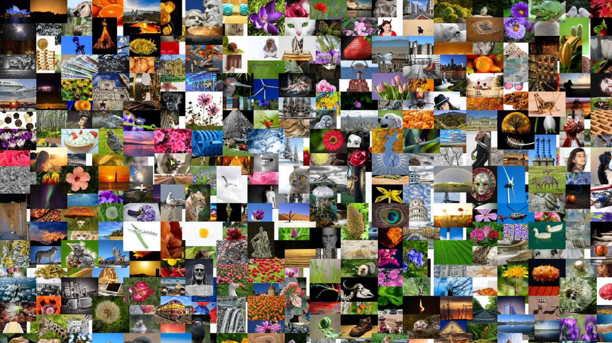
Ask students: What do you see? What happened before this image was taken? What might happen next?
Computer vision asks similar questions, but it must infer them from pixels.
An image is a matrix. In a grayscale image, each pixel is one number. In a color image, each pixel usually has three numbers: red, green, and blue.
The challenge is that the meaning is not obvious from the raw numbers.
A sharp change from small to large numbers may indicate an edge.
Yes and no.
Modern systems are impressive: they can classify images, locate objects, generate images, track people, estimate depth, and assist scientific analysis.
But they still make mistakes because perception is ambiguous. A model may fail under new lighting, camera angle, occlusion, unusual objects, or biased data.
Quick discussion:
Clean or transform images.
Find parts or regions.
Connect images to meaning.
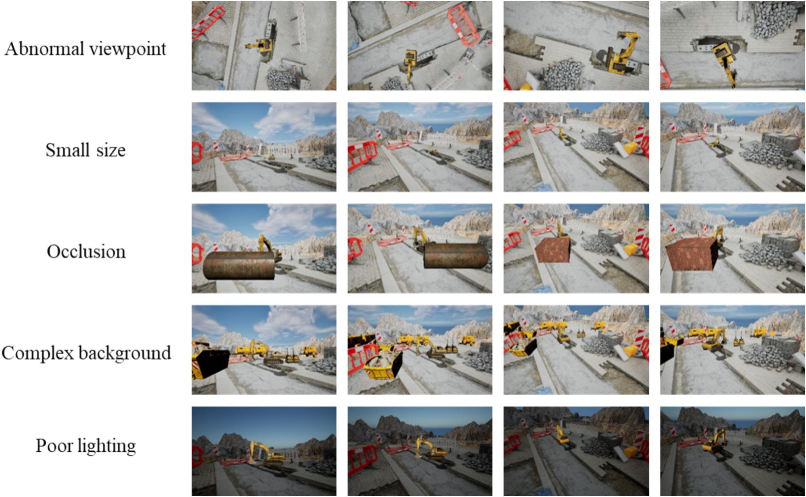
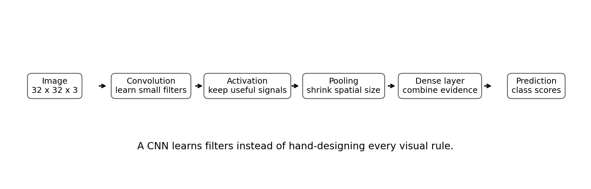
In traditional vision, humans design many filters and features. In deep learning, the model learns many useful filters from data.
Grayscale: one brightness value per pixel.
RGB: three values per pixel: red, green, blue.
Other image types: thermal images, depth maps, hyperspectral images, X-rays, microscopy channels, radar images.
The image type depends on the sensor. Computer vision is not limited to phone photos.
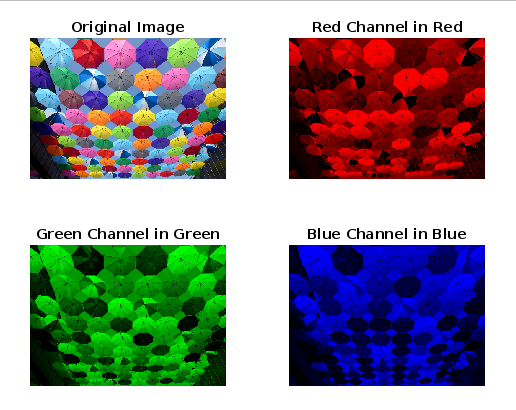
A filter slides a small grid of weights across an image. At each location, it combines nearby pixels to create a new pixel.
This local operation can smooth, sharpen, detect edges, or highlight texture.
Later, CNNs use the same idea, but the filter values are learned from data rather than manually chosen.
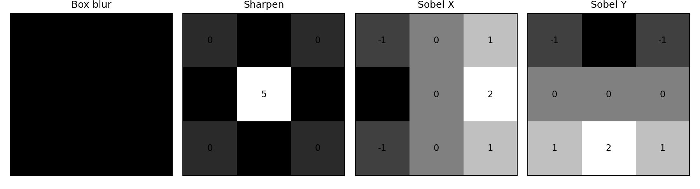
# Simple idea, not optimized
new_pixel = 0
for i in range(3):
for j in range(3):
new_pixel += image[y+i, x+j] * kernel[i, j]This is the core operation behind many image filters and CNN layers.
Why blur? A camera can capture random noise. Blur averages nearby pixels, making small noise less visible.
Tradeoff: too much blur removes fine details such as text, veins, hair, small defects, or disease symptoms.
In edge detection, blur is often used before computing edges so noise does not become false edges.
Sharpening makes boundaries and fine texture more visible. It can improve visual clarity, but it can also amplify noise.
In scientific imaging, sharpening should be used carefully because it may change the appearance of measurements.
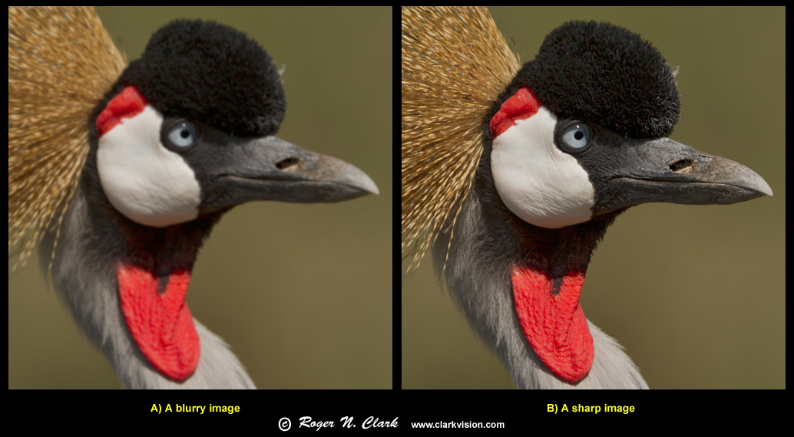
An edge often means a boundary: object edge, shadow boundary, material transition, text stroke, lane marking, leaf edge, or cell boundary.
Edge detection is useful because it simplifies an image into structural information.
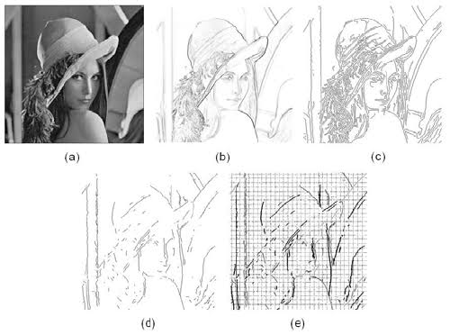
from skimage import filters
sobel_x = filters.sobel_h(gray_image)
sobel_y = filters.sobel_v(gray_image)
sobel_mag = filters.sobel(gray_image)The Sobel operator approximates the gradient of image intensity.
If brightness changes strongly, the gradient magnitude is high. Those high-gradient pixels are likely to be edges.
Students can see this directly in Notebook 1.
from skimage import feature
edges = feature.canny(gray_image, sigma=2)
plt.imshow(edges, cmap="gray")A camera samples a continuous world into a finite grid of pixels. Resolution tells us how many samples we collect.
Higher resolution can preserve smaller details, but it costs more memory, more computation, and sometimes more labeling effort.
Downsampling is common before machine learning because many models expect fixed input sizes.
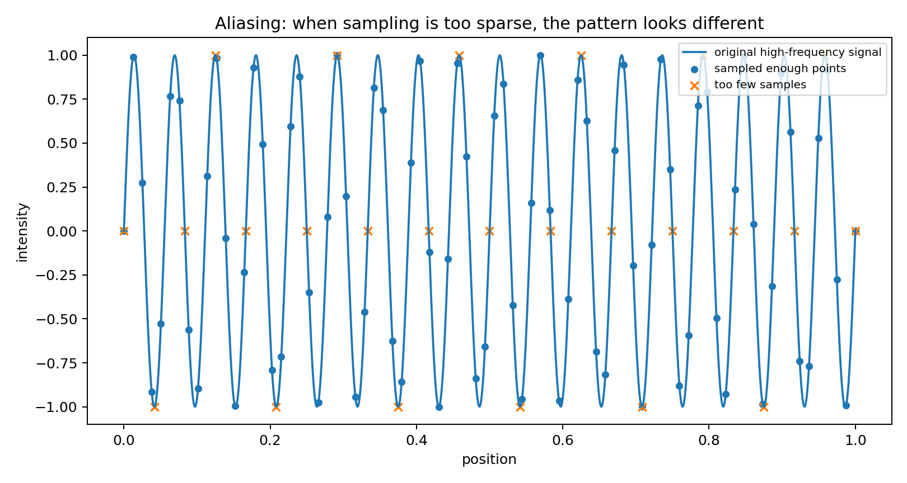
If a pattern changes faster than the sampling grid can capture, the sampled version may look like a different lower-frequency pattern.
Examples: stripes on shirts, crop row patterns in drone images, screen recordings, microscope grids, rotating wheels, or checkerboards.
Anti-aliasing reduces this problem by smoothing before downsampling.
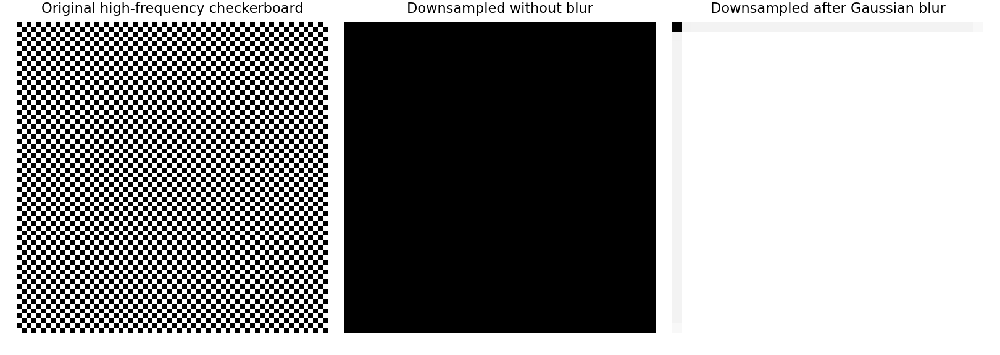
A high-frequency checkerboard can create misleading patterns if downsampled without smoothing.
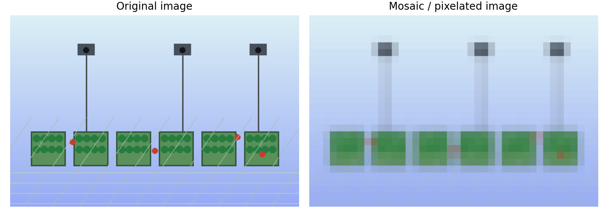
Discussion: What details are preserved? What details disappear? Why might mosaic effects be useful for privacy or teaching pixel structure?
Humans design features: edges, corners, textures, color thresholds, shape rules. This works well when the problem is simple and controlled.
We provide many examples and labels. The model learns internal features that help make predictions.
Bridge: CNNs do not throw away filters. They learn many filters automatically through training.
A neural network is a flexible function. It takes inputs, transforms them through layers, and outputs predictions.
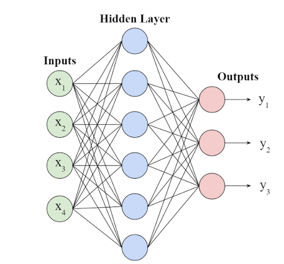
for images, labels in training_data:
predictions = model(images)
loss = compare(predictions, labels)
update_model_weights_to_reduce(loss)A fully connected neural network treats every pixel independently. A CNN respects image structure.
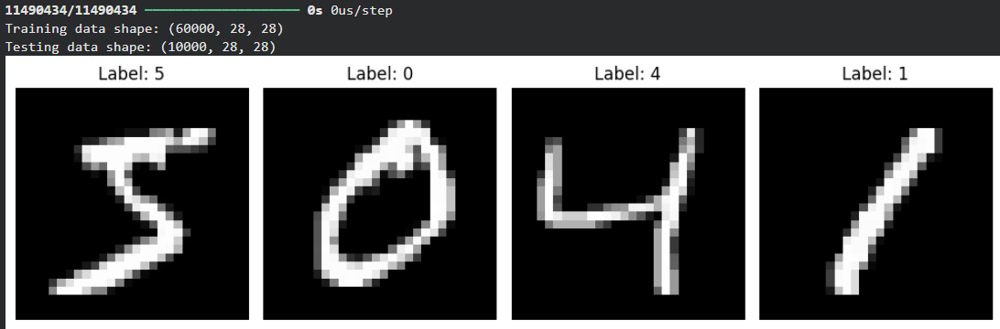
Before models could understand complex scenes, digit recognition was a landmark problem.
Students can train a small LeNet-style CNN on MNIST in Notebook 3.
CIFAR-10 has 10 classes: airplane, automobile, bird, cat, deer, dog, frog, horse, ship, and truck.
The images are only 32 x 32 pixels, but classification is harder than MNIST because images have colors, backgrounds, poses, and texture variation.
Students can train a compact CNN in Notebook 4.
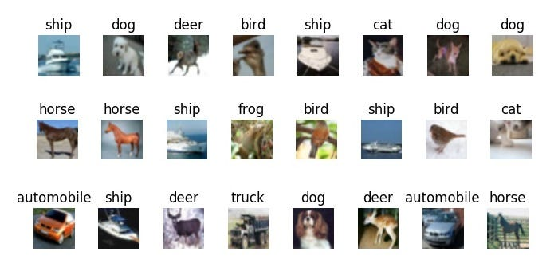
YOLO models are widely used for real-time object detection. Instead of only assigning one label to an entire image, YOLO predicts bounding boxes, labels, and confidence scores.
In Notebook 5, students can run a pretrained model on a sample image or upload their own image.
Important: pretrained models know the classes they were trained on. To detect specialized objects, we need specialized labeled data.
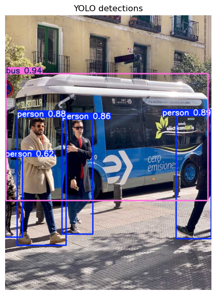
Computer vision is not only about recognizing images. Modern models can also synthesize new images.
GAN idea: a generator creates fake images; a discriminator tries to detect fakes. Both improve through competition.
In Notebook 6, students can inspect a DCGAN structure and, with data and GPU time, train it on face images.
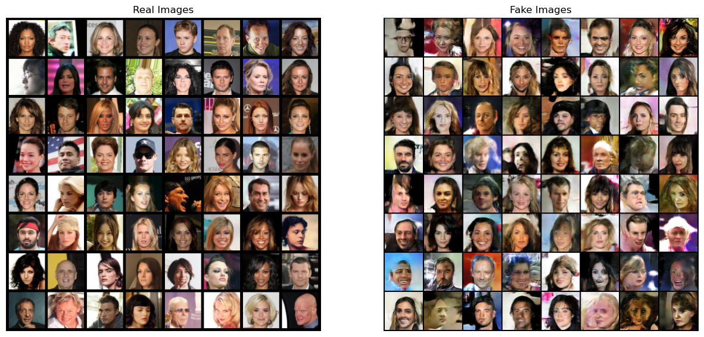
Images may contain faces, homes, license plates, classrooms, or personal information. Collect and share responsibly.
Models learn from data. If the data is narrow or imbalanced, predictions can be unfair or unreliable.
Detection and generation can be helpful, but they can also be used deceptively. Explain limitations clearly.
Blur, sharpen, Sobel, Canny.
Aliasing, anti-aliasing, pixelation.
Classic digit recognition with a LeNet-style CNN.
Small color image classification.
Pretrained object detection and upload-your-own image.
Generator/discriminator structure and face generation demo.
Final message: computer vision is not one application. It is a toolkit for turning visual data into information across science, engineering, medicine, agriculture, transportation, art, and everyday life.